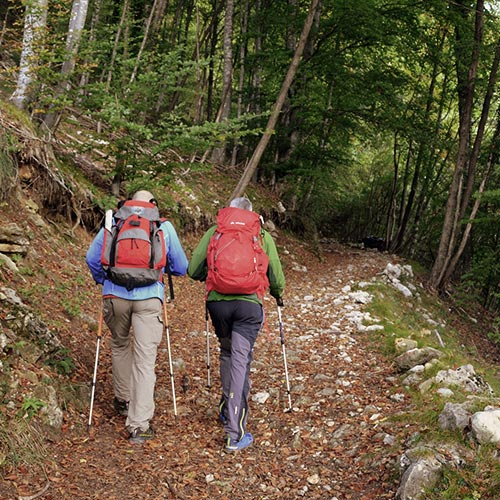

Wypoczynek z Nordic Walking
Wypoczynek z Nordic Walking i Fizjoterapią to projekt, który powstał spontanicznie, ponieważ gospodarze domu kochają Nordic Walking i obydwoje są terapeutami i trenerami rozwoju osobistego. Poczuli, że przyszedł czas zaprezentować ten rodzaj wypoczynku szerszemu gronu odbiorców. Paweł, jako instruktor Nordic Walking prowadzi szkolenia i treningi z prawidłowego korzystania z tej formy sportu. Joanna wspiera jego działania poprzez pracę psychoterapeutyczną.
Nordic Walking został wymyślony dla narciarzy w Finlandii w ramach całorocznego treningu. To bezpieczny i łagodny sposób aktywności fizycznej dla osób w każdym wieku. Uprawiając z nami nordic walking, osoby przebywają w pięknym lesie, a bliskość przyrody to dodatkowa korzyść dla naszego organizmu i psychiki.
Co zyskujesz, dzięki Nordic Walking?
Wzmocnienie mięśni całego ciała
Chodzenie z kijkami, przy zachowaniu prawidłowej techniki, angażuje aż 80 procent mięśni naszego ciała! To największy zakres wykorzystania mięśni. Przy pływaniu, jest to 65%, a przy bieganiu 60%. Przy nordic walking nie chodzi o intensywne używanie mięśni, ale ich kompleksowe zaangażowanie.
Bezpieczeństwo stawów
Sport ten nie obciąża stawów, dzięki czemu jest odpowiedni dla osób z nadwagą, otyłością, problemami ortopedycznymi (np. bóle kolan, bioder, pleców, kręgosłupa). Mogą go uprawiać osoby mające problemy z utrzymywaniem równowagi lub koordynacją ruchową. Podczas maszerowania z kijkami nacisk na stawy jest o 5–10 kg mniejszy niż bez nich!
Szczupła sylwetka
Marsz z kijkami sprawia, że ilość spalanych kalorii podwyższa się o ponad 40%. Warto regularnie spacerować z kijami, bo z pewnością pomogą nam zrzucić zbędne kilogramy.
Poprawa układu krążenia
Maszerując z kijami, pobieramy więcej tlenu – nawet o 58 procent! Wszystko zależy od intensywności, z jaką wbijamy kijki w podłoże. Ponadto nasze tętno wzrasta o 5 – 17 uderzeń na minutę, a serce pompuje więcej krwi. Dzięki temu organizm jest lepiej dotleniony. Naszym zdaniem nordic walking poprawia krążenie i zmniejsza ryzyko wystąpienia zawału serca.
Lepsze samopoczucie
Wysiłek fizyczny powoduje wytwarzanie endorfin, hormonu, który poprawia nasz nastrój i samopoczucie. Dlatego szczególnie jesienią, gdy szybko robi się ciemno i nastrój spada, warto samodzielnie zadbać o dobre samopoczucie i zwalczyć jesienną melancholię i chandrę.
Rozluźnienie mięśni
Maszerowanie z kijkami pomaga rozluźnić napięcie mięśni barków, szyi i grzbietu. Dla osób pracujących za biurkiem, przy komputerze to idealna forma sportu, która szybko pomoże pozbyć się uczucia odrętwienia i bólu. Siedzący tryb pracy wymaga ruchu po jej zakończeniu. Spaceruj z kijami nawet codziennie.
Skontaktuj się z nami, jeśli chcesz:
- nauczyć się chodzić z kijami od profesjonalisty
- dołączyć do grupy chodzącej z nami z kijami
- uczestniczyć w treningu grupowym połączonym z wykładem o nordic walking i radzeniu sobie ze stresem
- zorganizować wypoczynek z nordic walking dla swojej firmy lub organizacji